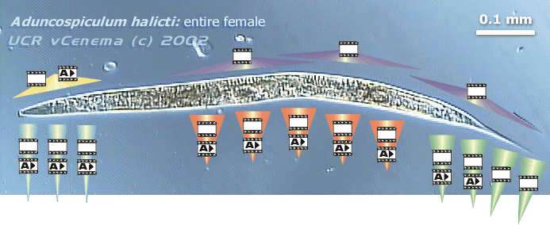

Aduncospiculum halicti
Giblin & Kaya, 1974
Source:
Culture of strain JB120 kept at UC-Riverside
Image map of female morphology
Click on
to see the corresponding clip with annotation
Click on
to see the corresponding clip without annotation
